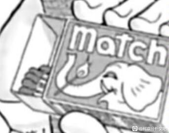

最新话，柯南提到了“南京锁”。
关于“南京锁“……意思是浓缩的朋克式的爱情和朋克式的自毁放纵。他的女友Nancy Spungen送给他一条琐，希望锁住彼此的心和感情。
第一话毛利兰抓手，第二话对着柯南说喜欢新一，伦敦篇逼迫新一表白，红修篇一把用拽领带将新一拽过去，白马探对毛利兰的“你不了解侦探”……
毛利兰无形之中给新一戴了锁链……
不需要钥匙，用火柴们就好啦……
柯南被锁住的是右脚，对应第一话毛利兰在新一右侧一拳干爆电线杆，在云霄飞车上抓住的新一右手，在回事务所时拉的柯南右手……
柯南表示，这锁真碍事，果然得先解开这锁啊，不用钥匙，用火柴把它弄开……
篇章设计上，火柴应该是迷惑项，重点是将火柴引入南京锁……
关于“南京锁“……意思是浓缩的朋克式的爱情和朋克式的自毁放纵。他的女友Nancy Spungen送给他一条琐，希望锁住彼此的心和感情。
第一话毛利兰抓手，第二话对着柯南说喜欢新一，伦敦篇逼迫新一表白，红修篇一把用拽领带将新一拽过去，白马探对毛利兰的“你不了解侦探”……
毛利兰无形之中给新一戴了锁链……
不需要钥匙，用火柴们就好啦……
柯南被锁住的是右脚，对应第一话毛利兰在新一右侧一拳干爆电线杆，在云霄飞车上抓住的新一右手，在回事务所时拉的柯南右手……
柯南表示，这锁真碍事，果然得先解开这锁啊，不用钥匙，用火柴把它弄开……
篇章设计上，火柴应该是迷惑项，重点是将火柴引入南京锁……
原来这就是花坛篇的解法吗
啥时候能解锁阿🥲
新兰关系正在瓦解中……
而且暴力破解这个爱情锁的火柴盒上，画了个鬼迷日眼的大象。希腊神话里，有个独眼的家伙也是矮大象，有兴趣的可以去查一下。漫画里谁是独眼？朗姆啊

2024-07-03 11:45 | シャナ慕サスケ:再就是关于左右手的分析，b站up印度蜜蜂做了一个长视频，和up提到的左右手区别不谋而合2024-07-03 14:13 | 夜瞳秒:回复 シャナ慕サスケ :一看就没有好好听讲～2024-07-03 14:19 | 夜瞳秒:感谢分享喔～2024-07-05 00:47 | 夜瞳秒:回复 シャナ慕サスケ :Mouri Ran是毛利兰罗马拼音，其中orian是英语翻译为罗马的，“o“与“i“去掉（日语元音，有设计名字省去oi的例子，比如冲矢昴的罗马拼音）是ran，而余下部分就变成M…u…R…… 嗯～看着眼熟，倒过来瞧瞧…… 嚯～这不是RUM嘛？2024-07-05 00:47 | 夜瞳秒:回复 夜瞳秒 :至于为何联想联系到冲矢昴的名字设计，就不得不提莫里斯勒布朗的罗马拼音，去掉与毛利兰相同部分，余下“surubu”与冲矢昴的“Subaru”相近……（狗头保命，我搜surubu时百度弹出Subaru……） 算博君一笑……2024-07-06 23:38 | 上総守信長ºº:难道这也在老贼的算计之中

还有高手 有一说一嗷，别看老贼年纪大了水平确实有下滑，藏伏笔暗号的功底还是不能小看
有一说一嗷，别看老贼年纪大了水平确实有下滑，藏伏笔暗号的功底还是不能小看
有一说一嗷，别看老贼年纪大了水平确实有下滑，藏伏笔暗号的功底还是不能小看发现了这个好厉害
可以可以
用sid和nancy代入青春侦探恋爱戏剧是不是太抽象了点。。。。而且sid极端爱慕+依恋nancy，nancy反而是这段关系中更成熟的一方，他们之间nancy翘了sid的可能性反而更大（也更合理）。就是说老贼真用这个意象的话，sid和nancy对照sr，设定上的“失位”还是不小的